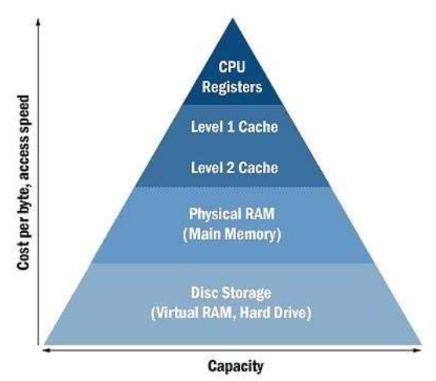

CPU Registers
E.
CPU registers are used for current tasks that the computer is running and are often overwritten as the computer switches between tasks. Values that CPU registers hold may eventually get written to memory and stored permanently but it will not store any values on a permanent basis.
L1 and L2 caches house anywhere between 32 to 1024 Kilobytes. Therefore, it places second.
Physical ram holds anywhere between 2GB to >64GB of memory. It holds a lot of memory but nowhere as much as a hard drive.
Hard drives house all the data on your computer on a permanent basis (that's why you can turn computer on and off and still retain access to the data you had previously). Naturally, it will have the highest capacity.
D
The CPU is the brain of the computer. It is responsible for telling the computer which instruction it needs to execute.
RAM stores frequently used values. It helps increase the overall speed of computer tasks since the computer does not need to go to the hard disk to get the values it needs (getting a value from the hard drive is much slower than getting it from RAM).
The motherboard is a circuit board that allows the other parts of the computer (like the CPU and memory) to communicate with each other.
HDDs are where data is stored on a long term basis. It allows you to restart or power on your computer without losing all the values you were working with previous to restarting/powering on.
A is true because operating systems provides a bridge between additional software (applications) and your computer's hardware. Operating systems have instructions that tell the hardware what to do. Software applications are built on top of the operating system and tell the operating system what to do in order to run the software.
B is true as operating systems manage computer resources such as CPU, memory, and peripherals (anything connected to your computer such as your mouse, keyboard, printer, etc.)
C is true as operating systems (often) establish a user interface for you to use your computer. Things like icons, windows, and menus are part of the user interface provided to users to help them use the operating system.
D is false as the OS is not responsible for storing data- that's the job of the hard drive.
B
Computer programs can be written in many different languages (e.g., Python, Java, C++, C#, etc.). However, the hardware that these various computer programs run on are fairly similar. A compiler's job is to take programs written in various languages (e.g., Python, Java, etc.) and translate it into statements that the CPU can execute.
True.
If a programmer is working on expanding functionality of an existing project, the programmer needs to understand the project. A close analogy would be if you are working on extending a research paper your group members wrote, you first have to understand what was previously written before you can continue to extend the paper. If a programmer is working on creating a new project, he/she does not need to understand how previously created projects work. It's like creating a website on the Internet. One doesn't have to know exactly how Internet works and what algorithms are behind it.
False.
Programs are just a set of instructions. Without hardware to perform these instructions, nothing would be done.
There are many possible answers to this question. One possible answer could be "An oven is to hardware as what a book of baking receipes is to software".